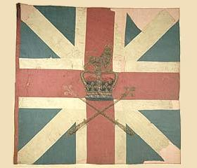
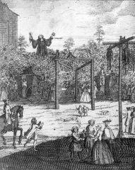
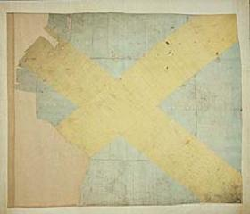

Sir Morgan O'Doherty's Farewell to Scotland
Text: 1st Part: Wiliam Maggin - 2nd Part: James Hogg
A Grim Portrait of Scotland in the 1830s
TuneSequenced by Christian Souchon




|
Sir Morgan O' Doherty's Farewell to Scotland.
1. Farewell, farewell, beggarly Scotland, Cold and beggarly poor countrie! If ever I cross thy border again, The muckle deil must carry me. There's but one tree in a' the land, And that's the bonnie gallows tree: The very nowte look to the south, And wish that they had wings to flee. 2. Farewell, farewell, beggarly Scotland, Brose and bannocks, crowdy and kale! Welcome, welcome, jolly old England, Laughing lasses and foaming ale! 'Twas when I came to merry Carlisle, [1] That out I laughed loud laughters three; And if I cross the Sark again [2] The muckle deil maun carry me. 3. Farewell, farewell, beggarly Scotland, Kiltit kimmers, wi' carroty hair, Pipers, who beg that your honours would buy A bawbee's worth of their famished air! I'd rather keep Cadwaller's goats, [3] And feast upon toasted cheese and leeks, Than go back again to the beggarly North, To herd 'mang loons with bottomless breeks. [4] Reply to Sir Morgan O' Doherty's Farewell to Scotland. 4. Go, get thee gone, thou dastardly loon, Go, get thee to thine own countrie; If ever you cross the Border again, The muckle deil accompany thee! There's mony a tree in fair Scotland, And there is ane, the gallows tree, On which we hang the Irish rogues; A fitting place it is for thee. 5. Go, get thee gone, thou dastardly loon! Too good for thee is brose and kale:-- We've lads and ladies gay in the land, Bonnie lasses, and nut-brown ale. When thou goest to merry Carlisle, Welcome take thy loud laughters three; But know that the most of our beggarly clan Come from the Holy Land, like thee. [5] 6. Go, get thee gone, thou beggarly loon, On thee our maidens refused to smile:-- Our pipers they scorn'd to beg from thee, A half-starved knight of the Emerald Isle. [6] Go rather and herd thy father's pigs, And feed on 'tatoes and butter-milk; But return not to the princely North, Land of the tartan, the bonnet, and kilt. [7] |
L'adieu de Sir Morgan O' Doherty à l'Ecosse
1. Adieu donc Ecosse famélique, Froide et famélique contrée! Si je franchis un jour tes limites, Le grand diable m'y aura forcé. Voila donc un pays sans arbres, Si ce n'est le joli gibet: Ce néant au midi regarde... Des ailes, qu'il puisse s'envoler! 2. Adieu donc Ecosse famélique, Tes choux et tes maigres brouets! Salut, Angleterre mirifique, Bière onctueuse et filles gaies ! Il me tardait que Carlisle arrive, [1] Pour pouvoir rire à satiété. Si le Sark me revoit sur sa rive, [2] C'est que le diable m'y aura porté. 3. Adieu donc Ecosse famélique, Femmes rousses aux jupons troussés, Sonneurs proposant leur musique De gueux pour un demi-penny! Plutôt de poireaux faire ripaille, Garder les chèvres du Dragon, [3] Que, dans la misère boréale, Frayer avec les braies sans fond. [4] Réponse à l'Adieu à l'Ecosse de Sir Morgan O' Doherty. 4. Va-t-en, va-t-en, ignoble imbécile, Retourne donc là d'où tu viens; Si de revenir tu t'avises, Gare au grand diable et à son train! L'Ecosse encore a quelques arbres. Il en est un, dit le gibet. On y suspend les misérables; Surtout si c'est des Irlandais. 5. Va-t-en, va-t-en, ignoble canaille! Nos choux sont bien trop bons pour toi:-- Nos gars, nos filles, notre marmaille, Nos bières nous mettent en joie. Et si dans l'accorte Carlisle, En guise de salut tu ris; Sache que nos clans de racaille Sont venus de ton paradis. [5] 6. Va-t-en, va-t-en chez toi, pauvre hère, Nos filles ne sont pas pour toi:-- Nos nobles sonneurs n'ont que faire, D'un maigre Don Quichotte Irois. [6] Retourne aux pourceaux de ton père, A tes patates avariées; Fuis à jamais l'Ecosse altière, Ses kilts, ses plaids et ses bonnets. [7] (Trad. Ch.Souchon (c) 2005) |
|
[1]
Carlisle
: Last Cumbrian (English) city before the Border.
[2] Sark : the River Sark follows for much of its course the English Border. [3] The Cadwaller (Dragon) : is the emblem of Wales with reference to a prophecy of Myrddin/Merlin, stating that there will be a long fight between a red dragon (England) and a white dragon (Wales). The white dragon shall eventually overcome! Leek is also typical for Wales. [4] Bottomless breeks : kilt. [5] Come from the Holy Land like thee : The Scots came from Ireland in the 5th century. [6] Emerald Isle : Green Erin, Ireland [7] Morgan O' Doherty was the nom-de plume of William Maginn a colleague of Hogg's on Fraser's Magazine. "William Maginn, born in Dean Street, Cork City, in 1793, was so learned a youth that he entered Trinity College, Dublin at the age of ten and by the age of fourteen had become the second youngest graduate ever in Great Britain and Ireland. By the time he had received his doctorate he had distinguished himself in Greek and Latin, Hebrew, Sanskrit and Syriac, as well as in a number of modern languages and Irish. He began contributing to Blackwood's magazine in Edinburgh and in 1824 moved to London. A writer of caustic, humorous satires his glory years came in the 1830s after his launching, with notorious bohemian Hugh Fraser, of Fraser's Magazine (for Town and Country). Apart from his literary sketches for that magazine, he produced a ballad translation of Homer, translations of Roman comedy and what may be regarded as the first Irish short stories. A well-liked, highly intelligent, but somewhat harum scarum character, he found himself eventually in debtors' prison. A year's sojourn there ruined his health and he died of tuberculosis in 1842. " Source: Guest Donal -www;mudcat.org thread 59328 |
[1]
Carlisle
: Dernière ville anglaise avant la frontière écossaise..
[2] Sark : rivière qui suit la frontière écossaise sur une partie de son cours. [3] Le Dragon de Cadwaller : est l'emblème du Pays de Galles par référence à une prophétie de Myrddin/Merlin, disant qu'il y aurait une longue bataille entre un dragon rouge (les Saxons) et un dragon blanc (les Gallois). Le dragon blanc finira par l'emporter ! Le Poireau est un autre symbole du Pays de Galles. [4] Braies sans fond : kilt. [5] Sont venus de ton paradis : Les Scots vinrent d'Irlande au Vème siècle. [6] Irois : Irlandais [7] Morgan O' Doherty était le pseudonyme de William Maginn qui collabora comme Hogg au périodique londonien, le "Fraser's Magazine". "William Maginn, né à Cork en 1793, était si instruit, étant petit, qu'il entra à dix ans au Trinity College de Dublin et qu'à 14 ans il était le deuxième plus jeune diplômé universitaire de tous les temps de Grande Bretagne et d'Irlande. Le titre de docteur lui fut décerné, pour ses connaissances en Grec, Latin, Hébreux, Sanskrit et Syriaque, ainsi que dans plusieurs langues modernes dont le gaélique d'Irlande. Il collabora d'abord au "Blackwood's magazine" à Edimbourg, puis, en 1824, il partit pour Londres. Auteur de satires humoristiques, il connut son heure de gloire dans les années 1830, grâce au fantasque Hugh Fraser, du Fraser's Magazine (pour la Ville et la Campagne) qui le fit connaître. Outre ses essais littéraires dans ce magazine, on lui doit une traduction en vers d'Homère, des traductions de comédies latines qui sont les premières nouvelles de la lttérature irlandaise. Sympathique et très intelligent, il n'en était pas moins un peu tête en l'air et se retrouva un jour à la prison pour dettes. Le séjour d'un an qu'il y fit ruina sa santé et il mourut de tuberculose en 1842. " Source: "Hôte" Donal -www;mudcat.org "file" N° 59328 |